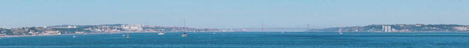

The international forum on
Pathway Analysis in Proteomics

|
The international forum on Pathway Analysis in Proteomics |
|
|
PathProt-10 Instituto Gulbenkian de Ciência -- October 19th and 20th 2017 Rua da Quinta Grande, 6, Oeiras, Portugal |
|
News: Registrations are OPEN! Please use the registration FORM below Registration deadline October 5th 2017 |
|
 The Tejo river mouth in Oeiras, PT. |
What is PathProt?PathProt is the international forum for Pathway Analysis in Proteomics. We are an informal discussion group that meets annually to brainstorm, since 2008. Our annual workshop is an ideal setting for open-minded, unbiased opinion-making. We pick on themes, listen to invited and submitted talks, discuss freely and summarize the results. The attendees are simply interested parties, wishing to get informed and participate in the discussions. There is always a healthy variety of academic backgrounds and industrial ties. The format of Pathprot meetings follows the participant-driven "un-workshop" model, in which we dedicate significantly bigger amounts of time to discussions, and less to talks. We will also dedicate specific time to review recent scientific literature . And, of course, plenty of local experiences, to make it fully enjoyable, in the portuguese way. The net result of holding a scientinfic meeting in this fashion is the natural emergence of collaboration in a variety of forms: the free sharing of ideas easily results in the recognition of the benefits of exchanging students, writing grant applications and papers together, etc. Confirmed participants (check here for updates) Pedro Fernandes, Roman Zubarev, Alexander Kel, Carlos Cordeiro, Thorleif Lavold, Marta Sousa Silva, Evgeny Nikolaev, Galina Selivanova, Mattias Moutran Widegren, António Ferreira, Ana Assis, Ana Marques, Claudio Gomes How to attend:Please fill-in the REGISTRATION FORM.Book your stay directly at Hotel Solar Pameiras by e-mail, stating that you are attending PathProt to get our discounted rate (single room @ Eur 60.00 per night) Mailto: Reservas Solar Palmeiras |
PathProt Organisers: |
About Lisboa and Portugal |
Hosted and supported by
|
|